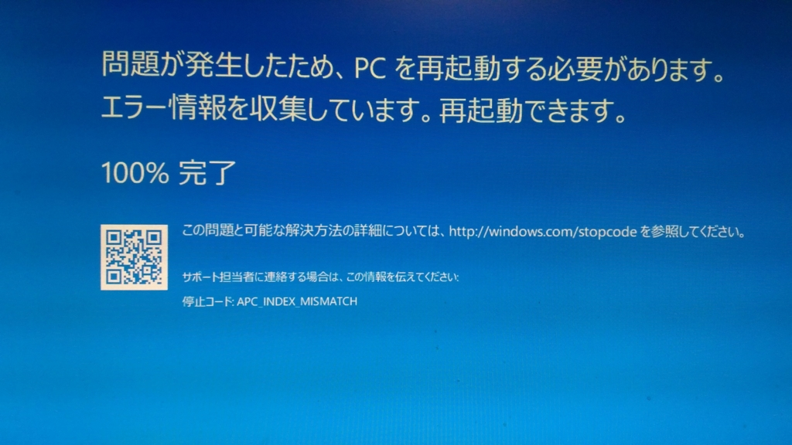
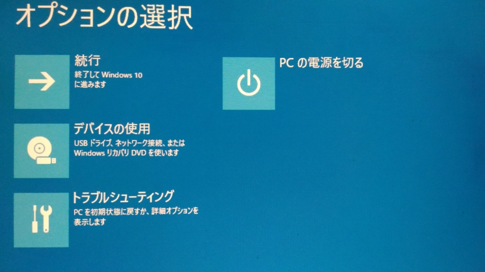
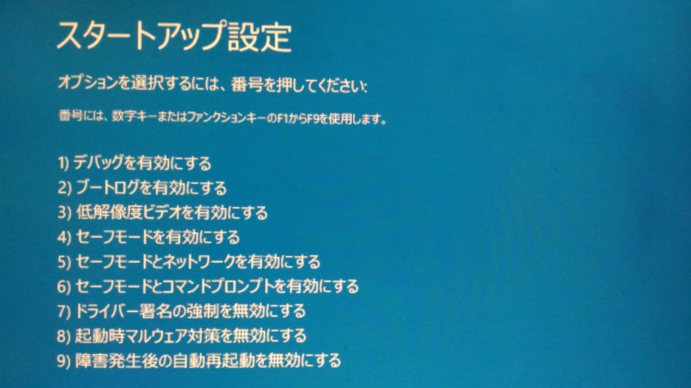
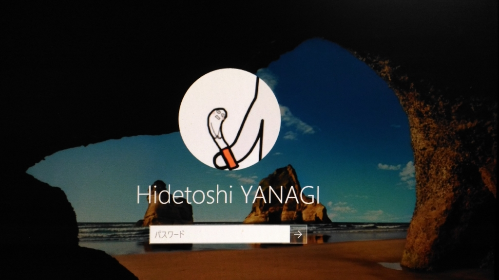
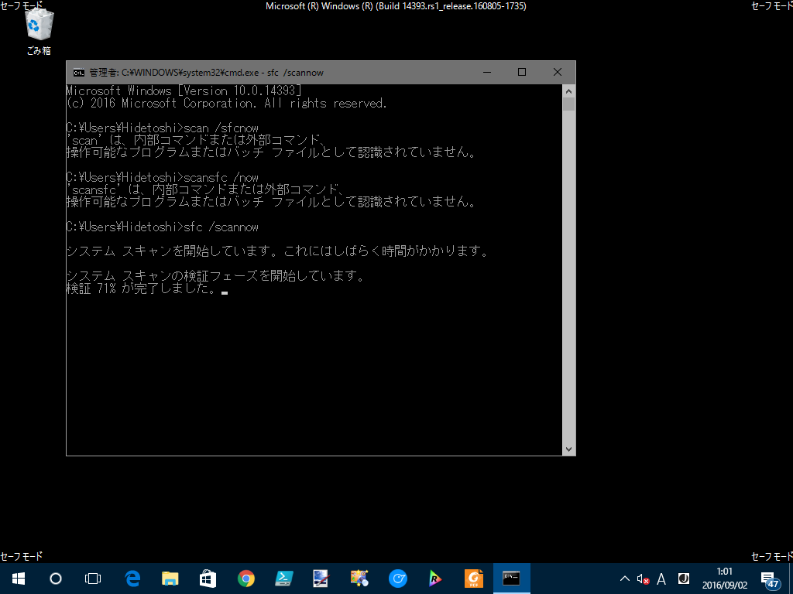
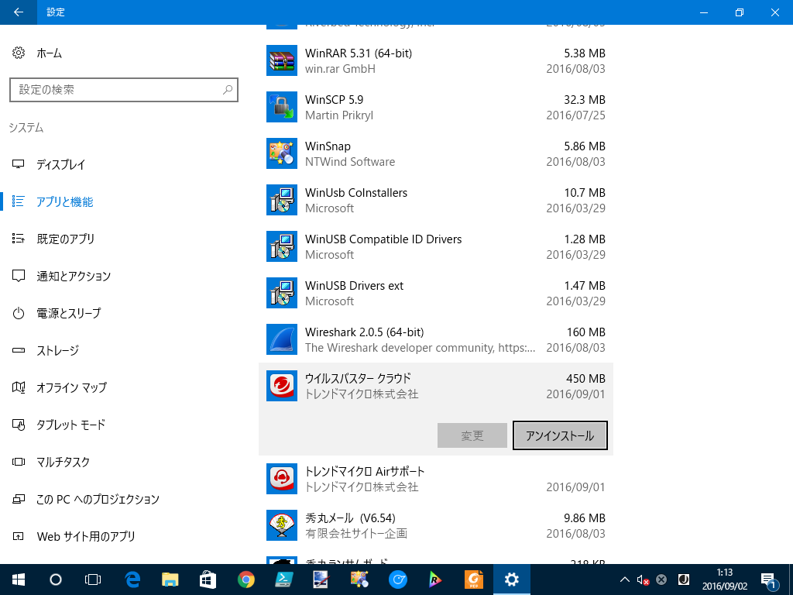
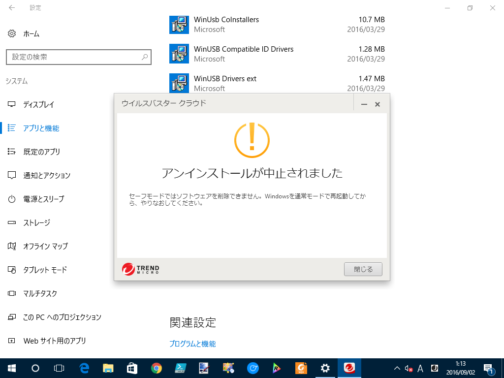

Windows 10 で BSOD。 APC_INDEX_MISMATCH で起動しなくなった
執筆日時：

PC は基本つけっぱなしなのだけど、晩飯食ったあとにウトウトして目を覚ましたら、ブルースクリーンになって死んでた。俺の顔面もブルースクリーン。書きかけのコードが次元のはざまに旅立ったかもしれない。
とりあえず直さないと。
APC_INDEX_MISMATCH ってなんだ？
The most common cause of this bug check is when a file system or driver has a mismatched sequence of calls to disable and re-enable APCs. The key data item is the Thread->CombinedApcDisable field. The CombinedApcDisable field consists of two separate 16-bit fields: SpecialApcDisable and KernelApcDisable. A negative value of either field indicates that a driver has disabled special or normal APCs (respectively) without re-enabling them. A positive value indicates that a driver has enabled special or normal APCs too many times.
APC っていうのが非同期プロシージャ―呼び出し（Asynchronous Procedure Calls）の略っぽいことはわかったが、だから何って感じだ。『Inside Windows』とかに書いてあるんだろうか。いい加減知識をアップデートしないと、最近は知らないことばっかりで困る（そういう系の本をマジメに読んだのは大学の頃が最後だよ）。
とりあえずセーフモードで起動する

電源をガチャガチャやると運よく回復メニューにたどり着けたので、まずはセーフモードで起動してみる。

［トラブル シューティング］－［詳細オプション］－［スタートアップ設定］と進み、Windows を再起動。

4 番を選択してセーフモードで起動する。

とりあえず、ログインできた。試しにここから単に再起動してみたが、やはり APC_INDEX_MISMATCH で起動できなくなる。どうやら何かごちゃごちゃしないと直らないっぽい。
SCAN /SFCNOW → ダメ

SCAN /SFCNOW（システムファイルのスキャン）という民間療法を試してみる。結論的には、なにも改善されなかった。
心当たりのあるプログラムをアンインストールする

最近なにか変なアプリをインストールしたかなぁ、と記憶をたどると、あったあった。
さっそくウイルスバスターさんには消えてもらうことにした。

こいつ一回死んでくればいいのにと思った。
けれどこの状態で再起動すると、なぜか正常に起動できた。原因はよくわからんが、ウイルス対策ソフトのアップデートと、Windows Update がコンボしてなんらかのヤバいなにかが起こったのかもしれん。
念のため、公式の削除ツールで完全に削除。
あとは、［システムの回復］を使うという手もあるけど、環境がロールバックされるのが嫌なので今回は使わなかった。そういうのを気にしない人は、これを真っ先に試した方がいいかもしれない。
いい機会なので、大事なファイルはクラウド or サブ HDD に退避させて、Windows 10 を初期化。環境を再構築しておいた。Windows 10 にアップデートする前からほったらかしでカオスだったが、まっさらになって気持ちいい。